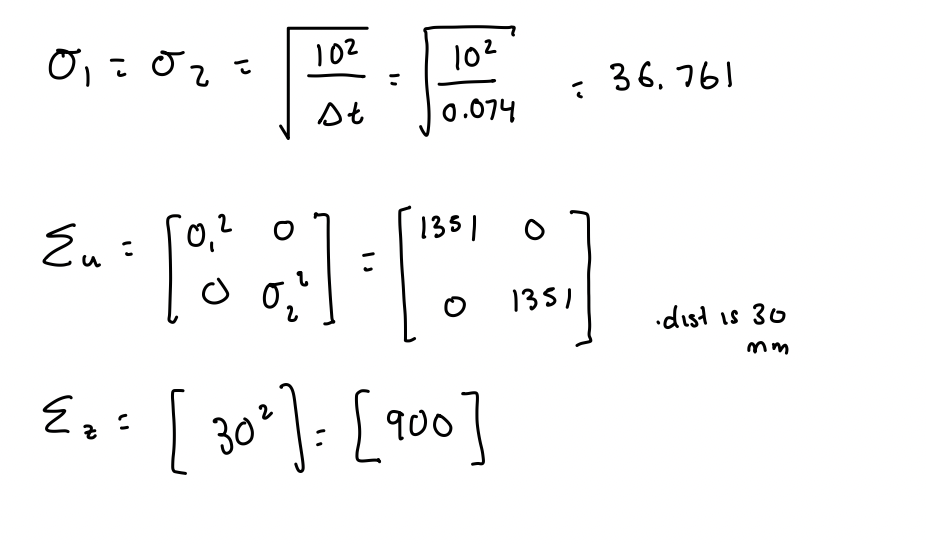

Lab 7 Kalman Filter
The purpose of this lab was to use the Kalman filter to speed up the behavior that was executed in Lab 6 as well as make it more accurate. The Kalman filter uses the TOF sensor readings to make a more precise position estimate based on the pwm input as well.
DRAG + MOMEMTUM ESTIMATE
Before creating a Kalman filter, I wanted to create a state space model for my robot based on the lecture in class. I used a step response to be able to measure the TOF + PWM data as the robot moved. I then plotted these graphs below.


To find the values of drag and momentum, I used the A matrix that was discussed in lecture and the equations for d and m.
d = u / ẋ
m = -dt / ln (1 - 0.9)
From the graphs plotted above, I can determine the steady state velocity, which is defined as the peak velocity that the robot stops acceleratingw hen ran at the max PWM value that is defined from lab 6. The 90% rise time is the time that it takes to reach 90% of the steady state velocity found above.
ẋ = 1900 m/s
t(0.9)= 1.25 s
Now, from these values I can caluclate the drag and mass values from the equations specified above.
d = 1 / 1900 = 0.00053
m = -0.00053 * 1.25 / ln(1-0.9) = 0.00029
After calculating the values for drag and momentum, I then plugged them into the A and B matrices from the Kalman filter equations.
INITIALIZE KALMAN FILTER
From the first part, I had already measured my robot's step response and then just continued to use that data to then be able to initialize the Kalman filter. Now for the actual implementation:
I first discretized the A and B matrices based on my calculated sampling rate. The sampling rate was calculating by finding the difference on average of the TOF data. This gave me a sampling rate of 0.074 s. I used this as my Δt value.
For my C matrix, I used the one from class: [[-1, 0]] since we only used the TOF data and we measured negative distance. For the state vector, I initialized it with the initial distance from the wall and set the velocity to be 0 as it was stationary.

After calculating these respective values + matrices, I implemented this initialization in python using the code snippet below.
KALMAN IN PYTHON
I then needed to actually check if the Kalman filter could work based on the parameters I calculated and the earlier run talked about above. This code snippet is shown below.
Running KF on the parameters calculated gave this plot. The KF filtered was pretty accurate with most of the points being the same, but I still wanted to mess around with the values to see if I could get it even more accurate.
I didn't change my values for sig1 and sig2 - I instead adjusted sig3 so that the sensor data would be less used and it would focus more on the model making the plot more accurate.

Now, I also wanted to see how much the sig values would have to change to introduce a lot of uncertainty to the model. Changing sig1 and sig2 did not really affect the plot that much so instead I made sig3 150 and saw the drastic effect away from the raw data.
KF ON ROBOT
Eventually, I wanted to implement the same task as lab 6 using the kalman filter with the calculated parameters from above.
After figuring out the best possible parameters -- ended up deciding sig1 = sig2 = 36.76 and sig3 = 10 -- I implemented the KF on the robot. I was pretty confused on how to get matrices and all the necessary computation